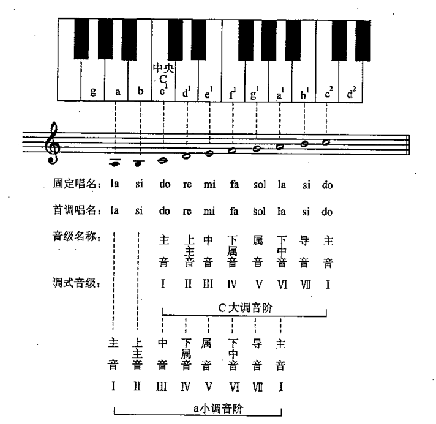

主音和弦，最像回到家的位置。
自然大调和自然小调是最常见的两种调式。它们可以使用相同的七个音，但音程排列一般不同，因此会产生不同的重心与色彩。
01
自然大调（Ionian）：明亮而稳定
自然大调的音程排列是全全半全全全半。我们通常以 C 自然大调为例，它使用 C、D、E、F、G、A、B。
把音乐从主和弦带向展开和对比。
制造回到 I 级的期待。
02
自然小调（Aeolian）：柔和而内省
自然小调的音程排列是全半全全半全全。我们通常以 A 自然小调为例，它使用 A、B、C、D、E、F、G。

你可以试试在下方的音轨中写出不同的大小调音阶，与之前一样，下面有一个八题编写练习，填充相应的示例，完成后由系统进行检查。暂定一格为一个十六分音符，音阶中每个音占一个八分音符的长度，还要根据题目写上下行。遇到困难了？点击示例按钮填充！
按下按钮开始 C-B 自然大调与自然小调八度音阶练习。
你可能已经发现了，自然大调和小调可以使用相同的音符集合，但产生的听感完全不同，这是因为切换了主音之后，音乐的重心和归属感发生了变化，从而产生了不同的特征音，大调的特征音一般是第7级音，音程为大七度，而小调的特征音一般是第6级音，音程为小六度。你可以尝试去掉这些特征音，再听一听音阶的变化，你会发现那种属性突然低了很多。
目前大部分的流行歌曲都以自然大调或自然小调为基础，这也是为什么掌握这两种调式对于理解和创作音乐非常重要。
03
和声小调与旋律小调
如同和弦一般，我们可以在基础调式上做部分升降和省略，在小调的基础上做改动，便衍生出了和声小调与旋律小调。和声小调升高第七级，让属和弦更有回到主和弦的力量；旋律小调上行时常升高第六、七级，使旋律线条更顺畅。它们都是在自然小调基础上，为特定音乐目的进行的变化。
同时，加入更多音的变化和增减，可以创造出更多独特的调式和音色，使音乐更具表现力和多样性，这种做法常见于部分民族调式中，比如新疆音乐中的双和声大调和匈牙利音乐中的双和声小调，还可以通过增减音的个数创造出五声、六声等不同类型的音阶。这些你并不需要记住，调式样式的创作是自由的，理论上只要能形成一定音阶结构，那么它就能被称为一种调式，总之，好听才是王道。